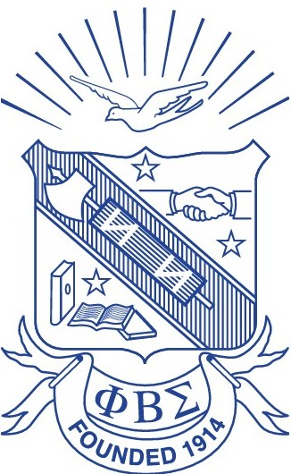

A local chapter with an international legacy.

Our History
Phi Beta Sigma Fraternity was founded at Howard University in Washington, D.C., January 9, 1914, by three young African-American male students. The Founders, Honorable A. Langston Taylor, Honorable Leonard F. Morse, and Honorable Charles I. Brown, wanted to organize a Greek letter fraternity that would truly exemplify the ideals of brotherhood, scholarship, and service. The Founders deeply wished to create an organization that viewed itself as “a part of” the general community rather than “apart from” the general community. They believed that each potential member should be judged by his own merits, rather than his family background or affluence…without regard to race, nationality, skin tone or texture of hair. They desired for their fraternity to exist as part of an even greater brotherhood which would be devoted to the “inclusive we” rather than the “exclusive we”. From its inception, the Founders also conceived Phi Beta Sigma as a mechanism to deliver services to the general community. Rather than gaining skills to be utilized exclusively for themselves and their immediate families, they held a deep conviction that they should return their newly acquired skills to the communities from which they had come. This deep conviction was mirrored in the Fraternity’s motto, “Culture For Service and Service For Humanity”
Phi Alpha Sigma carries those ideals into Frederick County through service projects, educational support, community partnerships, mentoring and opportunities for fellowship among Sigma men.
Our Mission
The Frederick County Alumni Chapter is committed to upholding the core values of brotherhood, scholarship, and service to create a lasting and meaningful impact within our community. Through innovative educational programs, effective social advocacy, and focused economic initiatives, we seek to empower individuals and strengthen families throughout Frederick County. Grounded in the timeless principles of our fraternity, we dedicate ourselves to cultivating strong leadership, promoting lifelong learning, and fostering unity that drives positive change. Our mission extends beyond supporting our members—we aspire to be a driving force for growth and opportunity.
Photo Gallery

Local service. Lasting relationships.
Community
We build relationships with local organizations and residents to address needs that matter in Frederick County.
Development
We support the growth of men and youth through mentorship, scholarship, leadership and professional connection.
Legacy
We honor more than a century of Sigma history while creating new traditions for future generations in Frederick.